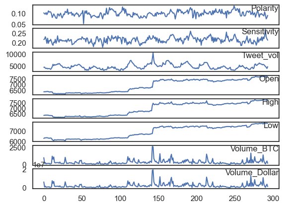
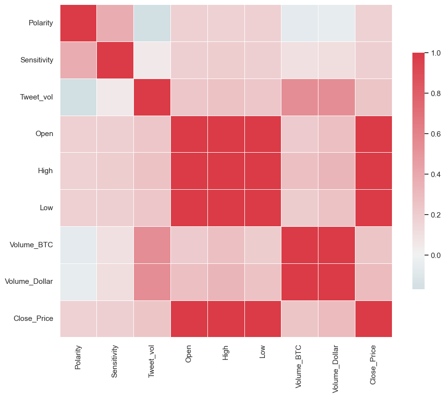
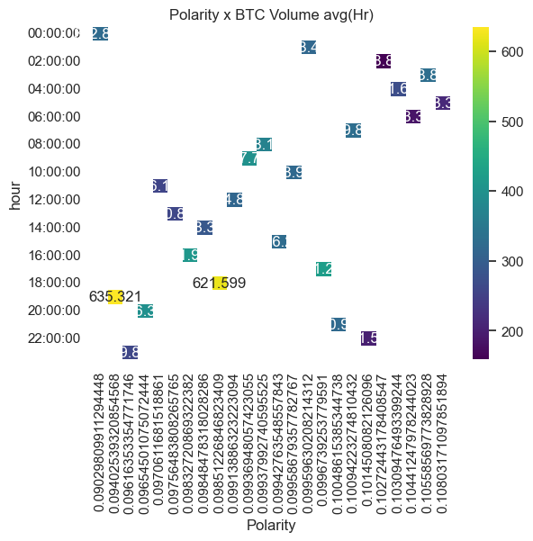
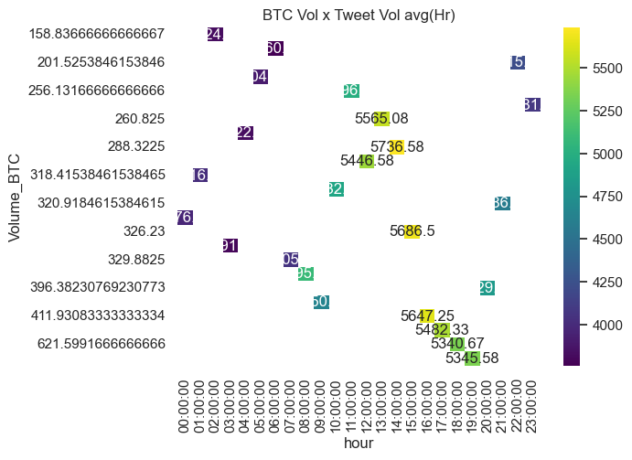
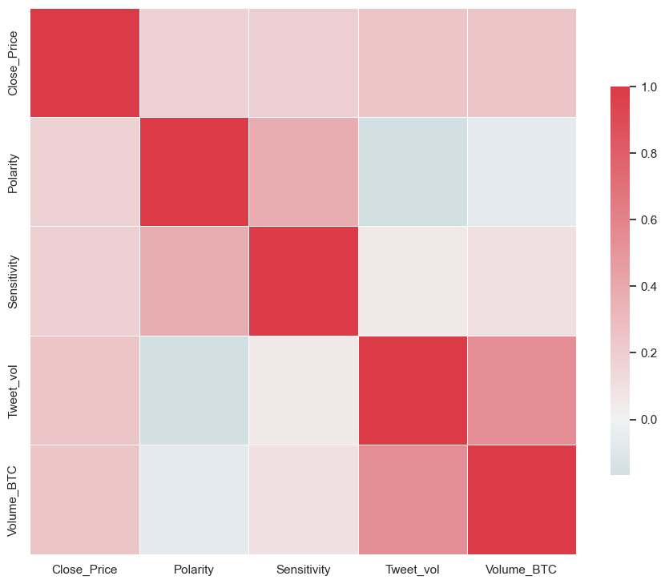
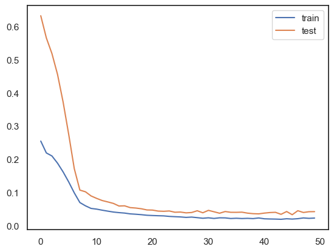
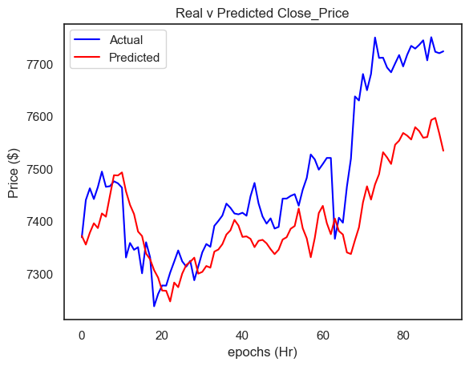

Bitcoin LSTM Model with Tweet Volume and Sentiment#
Load libraries#
Show code cell content
import pandas as pd
import re
from matplotlib import pyplot
import seaborn as sns
import numpy as np
import os # accessing directory structure
# Input data files are available in the "../input/" directory.
# For example, running this (by clicking run or pressing Shift+Enter) will list the files in the input directory
import os
print(os.listdir("/"))
# set seed
np.random.seed(12345)
Data Pre-processing#
notclean = pd.read_csv(
"https://static-1300131294.cos.ap-shanghai.myqcloud.com/data/deep-learning/LSTM/cleanprep.csv", delimiter=",", on_bad_lines="skip", engine="python", header=None
)
notclean.head()
| 0 | 1 | 2 | 3 | 4 | |
|---|---|---|---|---|---|
| 0 | 2018-07-11 19:35:15.363270 | b'tj' | b"Next two weeks prob v boring (climb up to 9k... | 0.007273 | 0.590909 |
| 1 | 2018-07-11 19:35:15.736769 | b'Kool_Kheart' | b'@Miss_rinola But you\xe2\x80\x99ve heard abo... | 0.000000 | 0.000000 |
| 2 | 2018-07-11 19:35:15.744769 | b'Gary Lang' | b'Duplicate skilled traders automatically with... | 0.625000 | 0.500000 |
| 3 | 2018-07-11 19:35:15.867339 | b'Jobs in Fintech' | b'Project Manager - Technical - FinTech - Cent... | 0.000000 | 0.175000 |
| 4 | 2018-07-11 19:35:16.021448 | b'ERC20' | b'Coinbase App Downloads Drop, Crypto Hype Fad... | 0.333333 | 0.500000 |
# -----------------Pre-processing -------------------#
notclean.columns = ["dt", "name", "text", "polarity", "sensitivity"]
notclean = notclean.drop(["name", "text"], axis=1)
notclean.head()
| dt | polarity | sensitivity | |
|---|---|---|---|
| 0 | 2018-07-11 19:35:15.363270 | 0.007273 | 0.590909 |
| 1 | 2018-07-11 19:35:15.736769 | 0.000000 | 0.000000 |
| 2 | 2018-07-11 19:35:15.744769 | 0.625000 | 0.500000 |
| 3 | 2018-07-11 19:35:15.867339 | 0.000000 | 0.175000 |
| 4 | 2018-07-11 19:35:16.021448 | 0.333333 | 0.500000 |
notclean.info()
<class 'pandas.core.frame.DataFrame'>
RangeIndex: 1413001 entries, 0 to 1413000
Data columns (total 3 columns):
# Column Non-Null Count Dtype
--- ------ -------------- -----
0 dt 1413001 non-null object
1 polarity 1413001 non-null float64
2 sensitivity 1413001 non-null float64
dtypes: float64(2), object(1)
memory usage: 32.3+ MB
notclean["dt"] = pd.to_datetime(notclean["dt"])
notclean["DateTime"] = notclean["dt"].dt.floor("h")
notclean.head()
| dt | polarity | sensitivity | DateTime | |
|---|---|---|---|---|
| 0 | 2018-07-11 19:35:15.363270 | 0.007273 | 0.590909 | 2018-07-11 19:00:00 |
| 1 | 2018-07-11 19:35:15.736769 | 0.000000 | 0.000000 | 2018-07-11 19:00:00 |
| 2 | 2018-07-11 19:35:15.744769 | 0.625000 | 0.500000 | 2018-07-11 19:00:00 |
| 3 | 2018-07-11 19:35:15.867339 | 0.000000 | 0.175000 | 2018-07-11 19:00:00 |
| 4 | 2018-07-11 19:35:16.021448 | 0.333333 | 0.500000 | 2018-07-11 19:00:00 |
vdf = (
notclean.groupby(pd.Grouper(key="dt", freq="H"))
.size()
.reset_index(name="tweet_vol")
)
vdf.head()
| dt | tweet_vol | |
|---|---|---|
| 0 | 2018-07-11 19:00:00 | 1747 |
| 1 | 2018-07-11 20:00:00 | 4354 |
| 2 | 2018-07-11 21:00:00 | 4432 |
| 3 | 2018-07-11 22:00:00 | 3980 |
| 4 | 2018-07-11 23:00:00 | 3830 |
vdf.info()
<class 'pandas.core.frame.DataFrame'>
RangeIndex: 302 entries, 0 to 301
Data columns (total 2 columns):
# Column Non-Null Count Dtype
--- ------ -------------- -----
0 dt 302 non-null datetime64[ns]
1 tweet_vol 302 non-null int64
dtypes: datetime64[ns](1), int64(1)
memory usage: 4.8 KB
vdf.index = pd.to_datetime(vdf.index)
vdf = vdf.set_index("dt")
vdf.info()
<class 'pandas.core.frame.DataFrame'>
DatetimeIndex: 302 entries, 2018-07-11 19:00:00 to 2018-07-24 08:00:00
Data columns (total 1 columns):
# Column Non-Null Count Dtype
--- ------ -------------- -----
0 tweet_vol 302 non-null int64
dtypes: int64(1)
memory usage: 4.7 KB
vdf.head()
| tweet_vol | |
|---|---|
| dt | |
| 2018-07-11 19:00:00 | 1747 |
| 2018-07-11 20:00:00 | 4354 |
| 2018-07-11 21:00:00 | 4432 |
| 2018-07-11 22:00:00 | 3980 |
| 2018-07-11 23:00:00 | 3830 |
notclean.info()
<class 'pandas.core.frame.DataFrame'>
RangeIndex: 1413001 entries, 0 to 1413000
Data columns (total 4 columns):
# Column Non-Null Count Dtype
--- ------ -------------- -----
0 dt 1413001 non-null datetime64[ns]
1 polarity 1413001 non-null float64
2 sensitivity 1413001 non-null float64
3 DateTime 1413001 non-null datetime64[ns]
dtypes: datetime64[ns](2), float64(2)
memory usage: 43.1 MB
notclean.index = pd.to_datetime(notclean.index)
notclean.info()
<class 'pandas.core.frame.DataFrame'>
DatetimeIndex: 1413001 entries, 1970-01-01 00:00:00 to 1970-01-01 00:00:00.001413
Data columns (total 4 columns):
# Column Non-Null Count Dtype
--- ------ -------------- -----
0 dt 1413001 non-null datetime64[ns]
1 polarity 1413001 non-null float64
2 sensitivity 1413001 non-null float64
3 DateTime 1413001 non-null datetime64[ns]
dtypes: datetime64[ns](2), float64(2)
memory usage: 53.9 MB
vdf["tweet_vol"] = vdf["tweet_vol"].astype(float)
vdf.info()
<class 'pandas.core.frame.DataFrame'>
DatetimeIndex: 302 entries, 2018-07-11 19:00:00 to 2018-07-24 08:00:00
Data columns (total 1 columns):
# Column Non-Null Count Dtype
--- ------ -------------- -----
0 tweet_vol 302 non-null float64
dtypes: float64(1)
memory usage: 4.7 KB
notclean.info()
<class 'pandas.core.frame.DataFrame'>
DatetimeIndex: 1413001 entries, 1970-01-01 00:00:00 to 1970-01-01 00:00:00.001413
Data columns (total 4 columns):
# Column Non-Null Count Dtype
--- ------ -------------- -----
0 dt 1413001 non-null datetime64[ns]
1 polarity 1413001 non-null float64
2 sensitivity 1413001 non-null float64
3 DateTime 1413001 non-null datetime64[ns]
dtypes: datetime64[ns](2), float64(2)
memory usage: 53.9 MB
notclean.head()
| dt | polarity | sensitivity | DateTime | |
|---|---|---|---|---|
| 1970-01-01 00:00:00.000000000 | 2018-07-11 19:35:15.363270 | 0.007273 | 0.590909 | 2018-07-11 19:00:00 |
| 1970-01-01 00:00:00.000000001 | 2018-07-11 19:35:15.736769 | 0.000000 | 0.000000 | 2018-07-11 19:00:00 |
| 1970-01-01 00:00:00.000000002 | 2018-07-11 19:35:15.744769 | 0.625000 | 0.500000 | 2018-07-11 19:00:00 |
| 1970-01-01 00:00:00.000000003 | 2018-07-11 19:35:15.867339 | 0.000000 | 0.175000 | 2018-07-11 19:00:00 |
| 1970-01-01 00:00:00.000000004 | 2018-07-11 19:35:16.021448 | 0.333333 | 0.500000 | 2018-07-11 19:00:00 |
# ndf = pd.merge(notclean,vdf, how='inner',left_index=True, right_index=True)
notclean.head()
| dt | polarity | sensitivity | DateTime | |
|---|---|---|---|---|
| 1970-01-01 00:00:00.000000000 | 2018-07-11 19:35:15.363270 | 0.007273 | 0.590909 | 2018-07-11 19:00:00 |
| 1970-01-01 00:00:00.000000001 | 2018-07-11 19:35:15.736769 | 0.000000 | 0.000000 | 2018-07-11 19:00:00 |
| 1970-01-01 00:00:00.000000002 | 2018-07-11 19:35:15.744769 | 0.625000 | 0.500000 | 2018-07-11 19:00:00 |
| 1970-01-01 00:00:00.000000003 | 2018-07-11 19:35:15.867339 | 0.000000 | 0.175000 | 2018-07-11 19:00:00 |
| 1970-01-01 00:00:00.000000004 | 2018-07-11 19:35:16.021448 | 0.333333 | 0.500000 | 2018-07-11 19:00:00 |
df = notclean.groupby("DateTime").agg(lambda x: x.mean())
df["Tweet_vol"] = vdf["tweet_vol"]
df = df.drop(df.index[0])
df.head()
| dt | polarity | sensitivity | Tweet_vol | |
|---|---|---|---|---|
| DateTime | ||||
| 2018-07-11 20:00:00 | 2018-07-11 20:27:49.510636288 | 0.102657 | 0.216148 | 4354.0 |
| 2018-07-11 21:00:00 | 2018-07-11 21:28:35.636368640 | 0.098004 | 0.218612 | 4432.0 |
| 2018-07-11 22:00:00 | 2018-07-11 22:27:44.646705152 | 0.096688 | 0.231342 | 3980.0 |
| 2018-07-11 23:00:00 | 2018-07-11 23:28:06.455850496 | 0.103997 | 0.217739 | 3830.0 |
| 2018-07-12 00:00:00 | 2018-07-12 00:28:47.975385344 | 0.094383 | 0.195256 | 3998.0 |
df.tail()
| dt | polarity | sensitivity | Tweet_vol | |
|---|---|---|---|---|
| DateTime | ||||
| 2018-07-24 04:00:00 | 2018-07-24 04:27:40.946246656 | 0.121358 | 0.236000 | 4475.0 |
| 2018-07-24 05:00:00 | 2018-07-24 05:28:40.424965632 | 0.095163 | 0.216924 | 4808.0 |
| 2018-07-24 06:00:00 | 2018-07-24 06:30:52.606722816 | 0.088992 | 0.220173 | 6036.0 |
| 2018-07-24 07:00:00 | 2018-07-24 07:27:29.229673984 | 0.091439 | 0.198279 | 6047.0 |
| 2018-07-24 08:00:00 | 2018-07-24 08:07:02.674452224 | 0.071268 | 0.218217 | 2444.0 |
df.info()
<class 'pandas.core.frame.DataFrame'>
DatetimeIndex: 301 entries, 2018-07-11 20:00:00 to 2018-07-24 08:00:00
Data columns (total 4 columns):
# Column Non-Null Count Dtype
--- ------ -------------- -----
0 dt 301 non-null datetime64[ns]
1 polarity 301 non-null float64
2 sensitivity 301 non-null float64
3 Tweet_vol 301 non-null float64
dtypes: datetime64[ns](1), float64(3)
memory usage: 11.8 KB
btcDF = pd.read_csv("https://static-1300131294.cos.ap-shanghai.myqcloud.com/data/deep-learning/LSTM/btcSave2.csv", on_bad_lines="skip", engine="python")
btcDF["Timestamp"] = pd.to_datetime(btcDF["Timestamp"])
btcDF = btcDF.set_index(pd.DatetimeIndex(btcDF["Timestamp"]))
btcDF.head()
| Timestamp | Open | High | Low | Close | Volume (BTC) | Volume (Currency) | Weighted Price | |
|---|---|---|---|---|---|---|---|---|
| Timestamp | ||||||||
| 2018-07-10 01:00:00 | 2018-07-10 01:00:00 | 6666.75 | 6683.90 | 6635.59 | 6669.73 | 281.73 | 1875693.72 | 6657.70 |
| 2018-07-10 02:00:00 | 2018-07-10 02:00:00 | 6662.44 | 6674.60 | 6647.00 | 6647.00 | 174.10 | 1160103.29 | 6663.38 |
| 2018-07-10 03:00:00 | 2018-07-10 03:00:00 | 6652.52 | 6662.82 | 6621.99 | 6632.53 | 231.41 | 1536936.22 | 6641.70 |
| 2018-07-10 04:00:00 | 2018-07-10 04:00:00 | 6631.17 | 6655.48 | 6625.54 | 6635.92 | 120.38 | 799154.77 | 6638.52 |
| 2018-07-10 05:00:00 | 2018-07-10 05:00:00 | 6632.81 | 6651.06 | 6627.64 | 6640.57 | 94.00 | 624289.31 | 6641.32 |
btcDF = btcDF.drop(["Timestamp"], axis=1)
btcDF.head()
| Open | High | Low | Close | Volume (BTC) | Volume (Currency) | Weighted Price | |
|---|---|---|---|---|---|---|---|
| Timestamp | |||||||
| 2018-07-10 01:00:00 | 6666.75 | 6683.90 | 6635.59 | 6669.73 | 281.73 | 1875693.72 | 6657.70 |
| 2018-07-10 02:00:00 | 6662.44 | 6674.60 | 6647.00 | 6647.00 | 174.10 | 1160103.29 | 6663.38 |
| 2018-07-10 03:00:00 | 6652.52 | 6662.82 | 6621.99 | 6632.53 | 231.41 | 1536936.22 | 6641.70 |
| 2018-07-10 04:00:00 | 6631.17 | 6655.48 | 6625.54 | 6635.92 | 120.38 | 799154.77 | 6638.52 |
| 2018-07-10 05:00:00 | 6632.81 | 6651.06 | 6627.64 | 6640.57 | 94.00 | 624289.31 | 6641.32 |
Final_df = pd.merge(df, btcDF, how="inner", left_index=True, right_index=True)
Final_df.head()
| dt | polarity | sensitivity | Tweet_vol | Open | High | Low | Close | Volume (BTC) | Volume (Currency) | Weighted Price | |
|---|---|---|---|---|---|---|---|---|---|---|---|
| 2018-07-11 20:00:00 | 2018-07-11 20:27:49.510636288 | 0.102657 | 0.216148 | 4354.0 | 6342.97 | 6354.19 | 6291.00 | 6350.00 | 986.73 | 6231532.37 | 6315.33 |
| 2018-07-11 21:00:00 | 2018-07-11 21:28:35.636368640 | 0.098004 | 0.218612 | 4432.0 | 6352.99 | 6370.00 | 6345.76 | 6356.48 | 126.46 | 804221.55 | 6359.53 |
| 2018-07-11 22:00:00 | 2018-07-11 22:27:44.646705152 | 0.096688 | 0.231342 | 3980.0 | 6350.85 | 6378.47 | 6345.00 | 6361.93 | 259.10 | 1646353.87 | 6354.12 |
| 2018-07-11 23:00:00 | 2018-07-11 23:28:06.455850496 | 0.103997 | 0.217739 | 3830.0 | 6362.36 | 6381.25 | 6356.74 | 6368.78 | 81.54 | 519278.69 | 6368.23 |
| 2018-07-12 00:00:00 | 2018-07-12 00:28:47.975385344 | 0.094383 | 0.195256 | 3998.0 | 6369.49 | 6381.25 | 6361.83 | 6380.00 | 124.55 | 793560.22 | 6371.51 |
Final_df.info()
<class 'pandas.core.frame.DataFrame'>
DatetimeIndex: 294 entries, 2018-07-11 20:00:00 to 2018-07-24 01:00:00
Data columns (total 11 columns):
# Column Non-Null Count Dtype
--- ------ -------------- -----
0 dt 294 non-null datetime64[ns]
1 polarity 294 non-null float64
2 sensitivity 294 non-null float64
3 Tweet_vol 294 non-null float64
4 Open 294 non-null float64
5 High 294 non-null float64
6 Low 294 non-null float64
7 Close 294 non-null float64
8 Volume (BTC) 294 non-null float64
9 Volume (Currency) 294 non-null float64
10 Weighted Price 294 non-null float64
dtypes: datetime64[ns](1), float64(10)
memory usage: 27.6 KB
Final_df = Final_df.drop(["Weighted Price"], axis=1)
Final_df.head()
| dt | polarity | sensitivity | Tweet_vol | Open | High | Low | Close | Volume (BTC) | Volume (Currency) | |
|---|---|---|---|---|---|---|---|---|---|---|
| 2018-07-11 20:00:00 | 2018-07-11 20:27:49.510636288 | 0.102657 | 0.216148 | 4354.0 | 6342.97 | 6354.19 | 6291.00 | 6350.00 | 986.73 | 6231532.37 |
| 2018-07-11 21:00:00 | 2018-07-11 21:28:35.636368640 | 0.098004 | 0.218612 | 4432.0 | 6352.99 | 6370.00 | 6345.76 | 6356.48 | 126.46 | 804221.55 |
| 2018-07-11 22:00:00 | 2018-07-11 22:27:44.646705152 | 0.096688 | 0.231342 | 3980.0 | 6350.85 | 6378.47 | 6345.00 | 6361.93 | 259.10 | 1646353.87 |
| 2018-07-11 23:00:00 | 2018-07-11 23:28:06.455850496 | 0.103997 | 0.217739 | 3830.0 | 6362.36 | 6381.25 | 6356.74 | 6368.78 | 81.54 | 519278.69 |
| 2018-07-12 00:00:00 | 2018-07-12 00:28:47.975385344 | 0.094383 | 0.195256 | 3998.0 | 6369.49 | 6381.25 | 6361.83 | 6380.00 | 124.55 | 793560.22 |
Final_df.columns = [
"dt",
"Polarity",
"Sensitivity",
"Tweet_vol",
"Open",
"High",
"Low",
"Close_Price",
"Volume_BTC",
"Volume_Dollar",
]
Final_df.head()
| dt | Polarity | Sensitivity | Tweet_vol | Open | High | Low | Close_Price | Volume_BTC | Volume_Dollar | |
|---|---|---|---|---|---|---|---|---|---|---|
| 2018-07-11 20:00:00 | 2018-07-11 20:27:49.510636288 | 0.102657 | 0.216148 | 4354.0 | 6342.97 | 6354.19 | 6291.00 | 6350.00 | 986.73 | 6231532.37 |
| 2018-07-11 21:00:00 | 2018-07-11 21:28:35.636368640 | 0.098004 | 0.218612 | 4432.0 | 6352.99 | 6370.00 | 6345.76 | 6356.48 | 126.46 | 804221.55 |
| 2018-07-11 22:00:00 | 2018-07-11 22:27:44.646705152 | 0.096688 | 0.231342 | 3980.0 | 6350.85 | 6378.47 | 6345.00 | 6361.93 | 259.10 | 1646353.87 |
| 2018-07-11 23:00:00 | 2018-07-11 23:28:06.455850496 | 0.103997 | 0.217739 | 3830.0 | 6362.36 | 6381.25 | 6356.74 | 6368.78 | 81.54 | 519278.69 |
| 2018-07-12 00:00:00 | 2018-07-12 00:28:47.975385344 | 0.094383 | 0.195256 | 3998.0 | 6369.49 | 6381.25 | 6361.83 | 6380.00 | 124.55 | 793560.22 |
Final_df = Final_df[
[
"Polarity",
"Sensitivity",
"Tweet_vol",
"Open",
"High",
"Low",
"Volume_BTC",
"Volume_Dollar",
"Close_Price",
]
]
Final_df
| Polarity | Sensitivity | Tweet_vol | Open | High | Low | Volume_BTC | Volume_Dollar | Close_Price | |
|---|---|---|---|---|---|---|---|---|---|
| 2018-07-11 20:00:00 | 0.102657 | 0.216148 | 4354.0 | 6342.97 | 6354.19 | 6291.00 | 986.73 | 6231532.37 | 6350.00 |
| 2018-07-11 21:00:00 | 0.098004 | 0.218612 | 4432.0 | 6352.99 | 6370.00 | 6345.76 | 126.46 | 804221.55 | 6356.48 |
| 2018-07-11 22:00:00 | 0.096688 | 0.231342 | 3980.0 | 6350.85 | 6378.47 | 6345.00 | 259.10 | 1646353.87 | 6361.93 |
| 2018-07-11 23:00:00 | 0.103997 | 0.217739 | 3830.0 | 6362.36 | 6381.25 | 6356.74 | 81.54 | 519278.69 | 6368.78 |
| 2018-07-12 00:00:00 | 0.094383 | 0.195256 | 3998.0 | 6369.49 | 6381.25 | 6361.83 | 124.55 | 793560.22 | 6380.00 |
| ... | ... | ... | ... | ... | ... | ... | ... | ... | ... |
| 2018-07-23 21:00:00 | 0.107282 | 0.235636 | 5164.0 | 7746.99 | 7763.59 | 7690.16 | 237.63 | 1836633.86 | 7706.00 |
| 2018-07-23 22:00:00 | 0.094493 | 0.271796 | 4646.0 | 7699.13 | 7759.99 | 7690.50 | 63.31 | 489000.25 | 7750.09 |
| 2018-07-23 23:00:00 | 0.074246 | 0.231640 | 4455.0 | 7754.57 | 7777.00 | 7715.45 | 280.46 | 2173424.81 | 7722.32 |
| 2018-07-24 00:00:00 | 0.080870 | 0.219367 | 3862.0 | 7722.95 | 7730.61 | 7690.17 | 496.48 | 3830571.66 | 7719.62 |
| 2018-07-24 01:00:00 | 0.090717 | 0.212626 | 4620.0 | 7712.46 | 7727.70 | 7691.14 | 163.99 | 1264085.79 | 7723.22 |
294 rows × 9 columns
Exploratory Analysis#
# --------------Analysis----------------------------#
values = Final_df.values
groups = [0, 1, 2, 3, 4, 5, 6, 7]
i = 1
pyplot.figure()
for group in groups:
pyplot.subplot(len(groups), 1, i)
pyplot.plot(values[:, group])
pyplot.title(Final_df.columns[group], y=0.5, loc="right")
i += 1
pyplot.show()

Final_df["Volume_BTC"].max()
2640.49
Final_df["Volume_Dollar"].max()
19126407.89
Final_df["Volume_BTC"].sum()
96945.04000000001
Final_df["Volume_Dollar"].sum()
684457140.05
Final_df["Tweet_vol"].max()
10452.0
Final_df.describe()
| Polarity | Sensitivity | Tweet_vol | Open | High | Low | Volume_BTC | Volume_Dollar | Close_Price | |
|---|---|---|---|---|---|---|---|---|---|
| count | 294.000000 | 294.000000 | 294.000000 | 294.000000 | 294.000000 | 294.000000 | 294.000000 | 2.940000e+02 | 294.000000 |
| mean | 0.099534 | 0.214141 | 4691.119048 | 6915.349388 | 6946.782925 | 6889.661054 | 329.745034 | 2.328086e+06 | 6920.150000 |
| std | 0.012114 | 0.014940 | 1048.922706 | 564.467674 | 573.078843 | 559.037540 | 344.527625 | 2.508128e+06 | 565.424866 |
| min | 0.051695 | 0.174330 | 2998.000000 | 6149.110000 | 6173.610000 | 6072.000000 | 22.000000 | 1.379601e+05 | 6149.110000 |
| 25% | 0.091489 | 0.203450 | 3878.750000 | 6285.077500 | 6334.942500 | 6266.522500 | 129.230000 | 8.412214e+05 | 6283.497500 |
| 50% | 0.099198 | 0.214756 | 4452.000000 | 7276.845000 | 7311.380000 | 7245.580000 | 223.870000 | 1.607008e+06 | 7281.975000 |
| 75% | 0.106649 | 0.223910 | 5429.750000 | 7422.957500 | 7457.202500 | 7396.427500 | 385.135000 | 2.662185e+06 | 7424.560000 |
| max | 0.135088 | 0.271796 | 10452.000000 | 7754.570000 | 7800.000000 | 7724.500000 | 2640.490000 | 1.912641e+07 | 7750.090000 |
cor = Final_df.corr()
cor
| Polarity | Sensitivity | Tweet_vol | Open | High | Low | Volume_BTC | Volume_Dollar | Close_Price | |
|---|---|---|---|---|---|---|---|---|---|
| Polarity | 1.000000 | 0.380350 | -0.167573 | 0.179056 | 0.176277 | 0.180088 | -0.062868 | -0.052646 | 0.178456 |
| Sensitivity | 0.380350 | 1.000000 | 0.053903 | 0.194763 | 0.200611 | 0.190222 | 0.097124 | 0.112425 | 0.193203 |
| Tweet_vol | -0.167573 | 0.053903 | 1.000000 | 0.237185 | 0.262207 | 0.234330 | 0.541112 | 0.545850 | 0.250448 |
| Open | 0.179056 | 0.194763 | 0.237185 | 1.000000 | 0.997128 | 0.998799 | 0.217478 | 0.277600 | 0.997217 |
| High | 0.176277 | 0.200611 | 0.262207 | 0.997128 | 1.000000 | 0.996650 | 0.270551 | 0.329816 | 0.998816 |
| Low | 0.180088 | 0.190222 | 0.234330 | 0.998799 | 0.996650 | 1.000000 | 0.202895 | 0.263863 | 0.998058 |
| Volume_BTC | -0.062868 | 0.097124 | 0.541112 | 0.217478 | 0.270551 | 0.202895 | 1.000000 | 0.995873 | 0.243875 |
| Volume_Dollar | -0.052646 | 0.112425 | 0.545850 | 0.277600 | 0.329816 | 0.263863 | 0.995873 | 1.000000 | 0.303347 |
| Close_Price | 0.178456 | 0.193203 | 0.250448 | 0.997217 | 0.998816 | 0.998058 | 0.243875 | 0.303347 | 1.000000 |
Top_Vol = Final_df["Volume_BTC"].nlargest(10)
Top_Vol
2018-07-17 18:00:00 2640.49
2018-07-17 19:00:00 2600.32
2018-07-23 03:00:00 1669.28
2018-07-18 04:00:00 1576.15
2018-07-20 17:00:00 1510.00
2018-07-18 19:00:00 1490.02
2018-07-23 19:00:00 1396.32
2018-07-12 07:00:00 1211.64
2018-07-16 10:00:00 1147.69
2018-07-23 08:00:00 1135.38
Name: Volume_BTC, dtype: float64
Top_Sen = Final_df["Sensitivity"].nlargest(10)
Top_Sen
2018-07-23 22:00:00 0.271796
2018-07-19 20:00:00 0.262048
2018-07-21 19:00:00 0.256952
2018-07-20 22:00:00 0.246046
2018-07-22 06:00:00 0.245820
2018-07-19 19:00:00 0.244655
2018-07-19 21:00:00 0.244215
2018-07-18 20:00:00 0.243534
2018-07-18 21:00:00 0.243422
2018-07-18 18:00:00 0.241287
Name: Sensitivity, dtype: float64
Top_Pol = Final_df["Polarity"].nlargest(10)
Top_Pol
2018-07-22 05:00:00 0.135088
2018-07-16 03:00:00 0.130634
2018-07-19 20:00:00 0.127696
2018-07-15 10:00:00 0.127469
2018-07-22 06:00:00 0.126299
2018-07-15 06:00:00 0.124505
2018-07-16 05:00:00 0.124210
2018-07-22 09:00:00 0.122784
2018-07-15 13:00:00 0.122411
2018-07-22 12:00:00 0.122021
Name: Polarity, dtype: float64
Top_Tweet = Final_df["Tweet_vol"].nlargest(10)
Top_Tweet
2018-07-17 19:00:00 10452.0
2018-07-17 18:00:00 7995.0
2018-07-17 20:00:00 7354.0
2018-07-16 14:00:00 7280.0
2018-07-18 15:00:00 7222.0
2018-07-18 14:00:00 7209.0
2018-07-18 13:00:00 7171.0
2018-07-16 13:00:00 7133.0
2018-07-19 16:00:00 6886.0
2018-07-18 12:00:00 6844.0
Name: Tweet_vol, dtype: float64
import matplotlib.pyplot as plt
sns.set(style="white")
f, ax = plt.subplots(figsize=(11, 9))
cmap = sns.diverging_palette(220, 10, as_cmap=True)
ax = sns.heatmap(
cor,
cmap=cmap,
vmax=1,
center=0,
square=True,
linewidths=0.5,
cbar_kws={"shrink": 0.7},
)
plt.show()

# sns Heatmap for Hour x volume
# Final_df['time']=Final_df.index.time()
Final_df["time"] = Final_df.index.to_series().apply(lambda x: x.strftime("%X"))
Final_df.head()
| Polarity | Sensitivity | Tweet_vol | Open | High | Low | Volume_BTC | Volume_Dollar | Close_Price | time | |
|---|---|---|---|---|---|---|---|---|---|---|
| 2018-07-11 20:00:00 | 0.102657 | 0.216148 | 4354.0 | 6342.97 | 6354.19 | 6291.00 | 986.73 | 6231532.37 | 6350.00 | 20:00:00 |
| 2018-07-11 21:00:00 | 0.098004 | 0.218612 | 4432.0 | 6352.99 | 6370.00 | 6345.76 | 126.46 | 804221.55 | 6356.48 | 21:00:00 |
| 2018-07-11 22:00:00 | 0.096688 | 0.231342 | 3980.0 | 6350.85 | 6378.47 | 6345.00 | 259.10 | 1646353.87 | 6361.93 | 22:00:00 |
| 2018-07-11 23:00:00 | 0.103997 | 0.217739 | 3830.0 | 6362.36 | 6381.25 | 6356.74 | 81.54 | 519278.69 | 6368.78 | 23:00:00 |
| 2018-07-12 00:00:00 | 0.094383 | 0.195256 | 3998.0 | 6369.49 | 6381.25 | 6361.83 | 124.55 | 793560.22 | 6380.00 | 00:00:00 |
hour_df = Final_df
hour_df = hour_df.groupby("time").agg(lambda x: x.mean())
hour_df
| Polarity | Sensitivity | Tweet_vol | Open | High | Low | Volume_BTC | Volume_Dollar | Close_Price | |
|---|---|---|---|---|---|---|---|---|---|
| time | |||||||||
| 00:00:00 | 0.090298 | 0.211771 | 3976.384615 | 6930.237692 | 6958.360769 | 6900.588462 | 322.836154 | 2.228120e+06 | 6935.983077 |
| 01:00:00 | 0.099596 | 0.211714 | 4016.615385 | 6935.140769 | 6963.533846 | 6894.772308 | 318.415385 | 2.243338e+06 | 6933.794615 |
| 02:00:00 | 0.102724 | 0.204445 | 3824.083333 | 6868.211667 | 6889.440000 | 6842.588333 | 158.836667 | 1.105651e+06 | 6870.695833 |
| 03:00:00 | 0.105586 | 0.214824 | 3791.666667 | 6870.573333 | 6909.675833 | 6855.316667 | 328.811667 | 2.385733e+06 | 6888.139167 |
| 04:00:00 | 0.103095 | 0.208516 | 3822.916667 | 6887.420000 | 6911.649167 | 6872.603333 | 271.692500 | 1.949230e+06 | 6890.985000 |
| 05:00:00 | 0.108032 | 0.215058 | 3904.166667 | 6891.468333 | 6911.175833 | 6869.017500 | 213.315000 | 1.524601e+06 | 6890.451667 |
| 06:00:00 | 0.104412 | 0.210424 | 3760.250000 | 6889.327500 | 6907.070833 | 6868.484167 | 183.329167 | 1.281427e+06 | 6891.371667 |
| 07:00:00 | 0.100942 | 0.209435 | 4056.000000 | 6891.645833 | 6908.654167 | 6858.290833 | 329.882500 | 2.263694e+06 | 6878.757500 |
| 08:00:00 | 0.099380 | 0.210113 | 5095.583333 | 6878.635833 | 6903.660833 | 6851.435833 | 368.109167 | 2.616314e+06 | 6885.867500 |
| 09:00:00 | 0.099369 | 0.204565 | 4650.083333 | 6886.526667 | 6915.735000 | 6852.922500 | 397.702500 | 2.740251e+06 | 6888.328333 |
| 10:00:00 | 0.099587 | 0.203848 | 4932.833333 | 6888.095000 | 6921.905000 | 6870.502500 | 318.982500 | 2.194532e+06 | 6905.600833 |
| 11:00:00 | 0.097061 | 0.203488 | 4996.333333 | 6904.373333 | 6928.490000 | 6885.326667 | 256.131667 | 1.766995e+06 | 6907.590000 |
| 12:00:00 | 0.099139 | 0.207495 | 5446.583333 | 6908.016667 | 6942.194167 | 6890.370000 | 314.837500 | 2.200126e+06 | 6922.389167 |
| 13:00:00 | 0.097565 | 0.208969 | 5565.083333 | 6922.530000 | 6948.463333 | 6902.968333 | 260.825000 | 1.808326e+06 | 6925.079167 |
| 14:00:00 | 0.098485 | 0.212563 | 5736.583333 | 6925.589167 | 6952.400833 | 6908.944167 | 288.322500 | 2.033892e+06 | 6936.545833 |
| 15:00:00 | 0.099428 | 0.212782 | 5686.500000 | 6934.180833 | 6965.962500 | 6915.395833 | 326.230000 | 2.313765e+06 | 6937.513333 |
| 16:00:00 | 0.098327 | 0.215643 | 5647.250000 | 6937.987500 | 6970.406667 | 6914.132500 | 411.930833 | 2.977255e+06 | 6947.045000 |
| 17:00:00 | 0.099674 | 0.219544 | 5482.333333 | 6947.205000 | 6986.905000 | 6928.375833 | 421.290833 | 3.020724e+06 | 6946.573333 |
| 18:00:00 | 0.098512 | 0.223854 | 5340.666667 | 6946.270833 | 7020.676667 | 6917.940000 | 621.599167 | 4.405309e+06 | 6985.155833 |
| 19:00:00 | 0.094025 | 0.227546 | 5345.583333 | 6984.812500 | 7048.856667 | 6948.802500 | 635.320833 | 4.639426e+06 | 6990.852500 |
| 20:00:00 | 0.096545 | 0.221846 | 4829.692308 | 6941.196923 | 6968.019231 | 6903.869231 | 396.382308 | 2.764029e+06 | 6937.162308 |
| 21:00:00 | 0.100486 | 0.227031 | 4586.076923 | 6937.536923 | 6961.624615 | 6902.450000 | 320.918462 | 2.235449e+06 | 6929.238462 |
| 22:00:00 | 0.101451 | 0.231768 | 4215.769231 | 6928.340769 | 6960.293846 | 6899.097692 | 201.525385 | 1.425684e+06 | 6924.276923 |
| 23:00:00 | 0.096164 | 0.218966 | 4081.230769 | 6924.337692 | 6960.037692 | 6893.017692 | 259.863846 | 1.851852e+06 | 6928.529231 |
hour_df.head()
| Polarity | Sensitivity | Tweet_vol | Open | High | Low | Volume_BTC | Volume_Dollar | Close_Price | |
|---|---|---|---|---|---|---|---|---|---|
| time | |||||||||
| 00:00:00 | 0.090298 | 0.211771 | 3976.384615 | 6930.237692 | 6958.360769 | 6900.588462 | 322.836154 | 2.228120e+06 | 6935.983077 |
| 01:00:00 | 0.099596 | 0.211714 | 4016.615385 | 6935.140769 | 6963.533846 | 6894.772308 | 318.415385 | 2.243338e+06 | 6933.794615 |
| 02:00:00 | 0.102724 | 0.204445 | 3824.083333 | 6868.211667 | 6889.440000 | 6842.588333 | 158.836667 | 1.105651e+06 | 6870.695833 |
| 03:00:00 | 0.105586 | 0.214824 | 3791.666667 | 6870.573333 | 6909.675833 | 6855.316667 | 328.811667 | 2.385733e+06 | 6888.139167 |
| 04:00:00 | 0.103095 | 0.208516 | 3822.916667 | 6887.420000 | 6911.649167 | 6872.603333 | 271.692500 | 1.949230e+06 | 6890.985000 |
# sns Hourly Heatmap
hour_df["hour"] = hour_df.index
result = hour_df.pivot(index="hour", columns="Polarity", values="Volume_BTC")
sns.heatmap(result, annot=True, fmt="g", cmap="viridis")
plt.title("Polarity x BTC Volume avg(Hr)")
plt.show()
# sns daily heatmap?

hour_df["hour"] = hour_df.index
result = hour_df.pivot(index="Volume_BTC", columns="hour", values="Tweet_vol")
sns.heatmap(result, annot=True, fmt="g", cmap="viridis")
plt.title("BTC Vol x Tweet Vol avg(Hr)")
plt.show()

# ----------------End Analysis------------------------#
# ---------------- LSTM Prep ------------------------#
df = Final_df
df.info()
<class 'pandas.core.frame.DataFrame'>
DatetimeIndex: 294 entries, 2018-07-11 20:00:00 to 2018-07-24 01:00:00
Data columns (total 10 columns):
# Column Non-Null Count Dtype
--- ------ -------------- -----
0 Polarity 294 non-null float64
1 Sensitivity 294 non-null float64
2 Tweet_vol 294 non-null float64
3 Open 294 non-null float64
4 High 294 non-null float64
5 Low 294 non-null float64
6 Volume_BTC 294 non-null float64
7 Volume_Dollar 294 non-null float64
8 Close_Price 294 non-null float64
9 time 294 non-null object
dtypes: float64(9), object(1)
memory usage: 33.4+ KB
df = df.drop(["Open", "High", "Low", "Volume_Dollar"], axis=1)
df.head()
| Polarity | Sensitivity | Tweet_vol | Volume_BTC | Close_Price | time | |
|---|---|---|---|---|---|---|
| 2018-07-11 20:00:00 | 0.102657 | 0.216148 | 4354.0 | 986.73 | 6350.00 | 20:00:00 |
| 2018-07-11 21:00:00 | 0.098004 | 0.218612 | 4432.0 | 126.46 | 6356.48 | 21:00:00 |
| 2018-07-11 22:00:00 | 0.096688 | 0.231342 | 3980.0 | 259.10 | 6361.93 | 22:00:00 |
| 2018-07-11 23:00:00 | 0.103997 | 0.217739 | 3830.0 | 81.54 | 6368.78 | 23:00:00 |
| 2018-07-12 00:00:00 | 0.094383 | 0.195256 | 3998.0 | 124.55 | 6380.00 | 00:00:00 |
df = df[["Close_Price", "Polarity", "Sensitivity", "Tweet_vol", "Volume_BTC"]]
df.head()
| Close_Price | Polarity | Sensitivity | Tweet_vol | Volume_BTC | |
|---|---|---|---|---|---|
| 2018-07-11 20:00:00 | 6350.00 | 0.102657 | 0.216148 | 4354.0 | 986.73 |
| 2018-07-11 21:00:00 | 6356.48 | 0.098004 | 0.218612 | 4432.0 | 126.46 |
| 2018-07-11 22:00:00 | 6361.93 | 0.096688 | 0.231342 | 3980.0 | 259.10 |
| 2018-07-11 23:00:00 | 6368.78 | 0.103997 | 0.217739 | 3830.0 | 81.54 |
| 2018-07-12 00:00:00 | 6380.00 | 0.094383 | 0.195256 | 3998.0 | 124.55 |
cor = df.corr()
import matplotlib.pyplot as plt
sns.set(style="white")
f, ax = plt.subplots(figsize=(11, 9))
cmap = sns.diverging_palette(220, 10, as_cmap=True)
ax = sns.heatmap(
cor,
cmap=cmap,
vmax=1,
center=0,
square=True,
linewidths=0.5,
cbar_kws={"shrink": 0.7},
)
plt.show()

LSTM Model#
from math import sqrt
from numpy import concatenate
from sklearn.preprocessing import MinMaxScaler
from sklearn.preprocessing import LabelEncoder
from sklearn.metrics import mean_squared_error
from matplotlib import pyplot
from pandas import read_csv
from pandas import DataFrame
from pandas import concat
from keras.models import Sequential
from keras.layers import Dense
from keras.layers import LSTM
# convert series to supervised learning
def series_to_supervised(data, n_in=1, n_out=1, dropnan=True):
n_vars = 1 if type(data) is list else data.shape[1]
df = DataFrame(data)
cols, names = list(), list()
# input sequence (t-n, ... t-1)
for i in range(n_in, 0, -1):
cols.append(df.shift(i))
names += [("var%d(t-%d)" % (j + 1, i)) for j in range(n_vars)]
# forecast sequence (t, t+1, ... t+n)
for i in range(0, n_out):
cols.append(df.shift(-i))
if i == 0:
names += [("var%d(t)" % (j + 1)) for j in range(n_vars)]
else:
names += [("var%d(t+%d)" % (j + 1, i)) for j in range(n_vars)]
# put it all together
agg = concat(cols, axis=1)
agg.columns = names
# drop rows with NaN values
if dropnan:
agg.dropna(inplace=True)
return agg
values = df.values
cols = df.columns.tolist()
cols = cols[-1:] + cols[:-1]
df = df[cols]
df = df[["Close_Price", "Polarity", "Sensitivity", "Tweet_vol", "Volume_BTC"]]
df.head()
| Close_Price | Polarity | Sensitivity | Tweet_vol | Volume_BTC | |
|---|---|---|---|---|---|
| 2018-07-11 20:00:00 | 6350.00 | 0.102657 | 0.216148 | 4354.0 | 986.73 |
| 2018-07-11 21:00:00 | 6356.48 | 0.098004 | 0.218612 | 4432.0 | 126.46 |
| 2018-07-11 22:00:00 | 6361.93 | 0.096688 | 0.231342 | 3980.0 | 259.10 |
| 2018-07-11 23:00:00 | 6368.78 | 0.103997 | 0.217739 | 3830.0 | 81.54 |
| 2018-07-12 00:00:00 | 6380.00 | 0.094383 | 0.195256 | 3998.0 | 124.55 |
scaler = MinMaxScaler(feature_range=(0, 1))
scaled = scaler.fit_transform(df.values)
n_hours = 3 # adding 3 hours lags creating number of observations
n_features = 5 # Features in the dataset.
n_obs = n_hours * n_features
reframed = series_to_supervised(scaled, n_hours, 1)
reframed.head()
| var1(t-3) | var2(t-3) | var3(t-3) | var4(t-3) | var5(t-3) | var1(t-2) | var2(t-2) | var3(t-2) | var4(t-2) | var5(t-2) | var1(t-1) | var2(t-1) | var3(t-1) | var4(t-1) | var5(t-1) | var1(t) | var2(t) | var3(t) | var4(t) | var5(t) | |
|---|---|---|---|---|---|---|---|---|---|---|---|---|---|---|---|---|---|---|---|---|
| 3 | 0.125479 | 0.611105 | 0.429055 | 0.181916 | 0.368430 | 0.129527 | 0.555312 | 0.454335 | 0.192380 | 0.039893 | 0.132931 | 0.539534 | 0.584943 | 0.131741 | 0.090548 | 0.137210 | 0.627175 | 0.445375 | 0.111618 | 0.022738 |
| 4 | 0.129527 | 0.555312 | 0.454335 | 0.192380 | 0.039893 | 0.132931 | 0.539534 | 0.584943 | 0.131741 | 0.090548 | 0.137210 | 0.627175 | 0.445375 | 0.111618 | 0.022738 | 0.144218 | 0.511893 | 0.214693 | 0.134156 | 0.039164 |
| 5 | 0.132931 | 0.539534 | 0.584943 | 0.131741 | 0.090548 | 0.137210 | 0.627175 | 0.445375 | 0.111618 | 0.022738 | 0.144218 | 0.511893 | 0.214693 | 0.134156 | 0.039164 | 0.135117 | 0.589271 | 0.500135 | 0.095922 | 0.045637 |
| 6 | 0.137210 | 0.627175 | 0.445375 | 0.111618 | 0.022738 | 0.144218 | 0.511893 | 0.214693 | 0.134156 | 0.039164 | 0.135117 | 0.589271 | 0.500135 | 0.095922 | 0.045637 | 0.111700 | 0.722717 | 0.212514 | 0.113362 | 0.045561 |
| 7 | 0.144218 | 0.511893 | 0.214693 | 0.134156 | 0.039164 | 0.135117 | 0.589271 | 0.500135 | 0.095922 | 0.045637 | 0.111700 | 0.722717 | 0.212514 | 0.113362 | 0.045561 | 0.111101 | 0.649855 | 0.365349 | 0.111752 | 0.053607 |
reframed.drop(reframed.columns[-4], axis=1)
reframed.head()
| var1(t-3) | var2(t-3) | var3(t-3) | var4(t-3) | var5(t-3) | var1(t-2) | var2(t-2) | var3(t-2) | var4(t-2) | var5(t-2) | var1(t-1) | var2(t-1) | var3(t-1) | var4(t-1) | var5(t-1) | var1(t) | var2(t) | var3(t) | var4(t) | var5(t) | |
|---|---|---|---|---|---|---|---|---|---|---|---|---|---|---|---|---|---|---|---|---|
| 3 | 0.125479 | 0.611105 | 0.429055 | 0.181916 | 0.368430 | 0.129527 | 0.555312 | 0.454335 | 0.192380 | 0.039893 | 0.132931 | 0.539534 | 0.584943 | 0.131741 | 0.090548 | 0.137210 | 0.627175 | 0.445375 | 0.111618 | 0.022738 |
| 4 | 0.129527 | 0.555312 | 0.454335 | 0.192380 | 0.039893 | 0.132931 | 0.539534 | 0.584943 | 0.131741 | 0.090548 | 0.137210 | 0.627175 | 0.445375 | 0.111618 | 0.022738 | 0.144218 | 0.511893 | 0.214693 | 0.134156 | 0.039164 |
| 5 | 0.132931 | 0.539534 | 0.584943 | 0.131741 | 0.090548 | 0.137210 | 0.627175 | 0.445375 | 0.111618 | 0.022738 | 0.144218 | 0.511893 | 0.214693 | 0.134156 | 0.039164 | 0.135117 | 0.589271 | 0.500135 | 0.095922 | 0.045637 |
| 6 | 0.137210 | 0.627175 | 0.445375 | 0.111618 | 0.022738 | 0.144218 | 0.511893 | 0.214693 | 0.134156 | 0.039164 | 0.135117 | 0.589271 | 0.500135 | 0.095922 | 0.045637 | 0.111700 | 0.722717 | 0.212514 | 0.113362 | 0.045561 |
| 7 | 0.144218 | 0.511893 | 0.214693 | 0.134156 | 0.039164 | 0.135117 | 0.589271 | 0.500135 | 0.095922 | 0.045637 | 0.111700 | 0.722717 | 0.212514 | 0.113362 | 0.045561 | 0.111101 | 0.649855 | 0.365349 | 0.111752 | 0.053607 |
print(reframed.head())
var1(t-3) var2(t-3) var3(t-3) var4(t-3) var5(t-3) var1(t-2)
3 0.125479 0.611105 0.429055 0.181916 0.368430 0.129527 \
4 0.129527 0.555312 0.454335 0.192380 0.039893 0.132931
5 0.132931 0.539534 0.584943 0.131741 0.090548 0.137210
6 0.137210 0.627175 0.445375 0.111618 0.022738 0.144218
7 0.144218 0.511893 0.214693 0.134156 0.039164 0.135117
var2(t-2) var3(t-2) var4(t-2) var5(t-2) var1(t-1) var2(t-1)
3 0.555312 0.454335 0.192380 0.039893 0.132931 0.539534 \
4 0.539534 0.584943 0.131741 0.090548 0.137210 0.627175
5 0.627175 0.445375 0.111618 0.022738 0.144218 0.511893
6 0.511893 0.214693 0.134156 0.039164 0.135117 0.589271
7 0.589271 0.500135 0.095922 0.045637 0.111700 0.722717
var3(t-1) var4(t-1) var5(t-1) var1(t) var2(t) var3(t) var4(t)
3 0.584943 0.131741 0.090548 0.137210 0.627175 0.445375 0.111618 \
4 0.445375 0.111618 0.022738 0.144218 0.511893 0.214693 0.134156
5 0.214693 0.134156 0.039164 0.135117 0.589271 0.500135 0.095922
6 0.500135 0.095922 0.045637 0.111700 0.722717 0.212514 0.113362
7 0.212514 0.113362 0.045561 0.111101 0.649855 0.365349 0.111752
var5(t)
3 0.022738
4 0.039164
5 0.045637
6 0.045561
7 0.053607
values = reframed.values
n_train_hours = 200
train = values[:n_train_hours, :]
test = values[n_train_hours:, :]
train.shape
(200, 20)
# split into input and outputs
train_X, train_y = train[:, :n_obs], train[:, -n_features]
test_X, test_y = test[:, :n_obs], test[:, -n_features]
# reshape input to be 3D [samples, timesteps, features]
train_X = train_X.reshape((train_X.shape[0], n_hours, n_features))
test_X = test_X.reshape((test_X.shape[0], n_hours, n_features))
print(train_X.shape, train_y.shape, test_X.shape, test_y.shape)
(200, 3, 5) (200,) (91, 3, 5) (91,)
# design network
model = Sequential()
model.add(LSTM(5, input_shape=(train_X.shape[1], train_X.shape[2])))
model.add(Dense(1))
model.compile(loss="mae", optimizer="adam")
# fit network
history = model.fit(
train_X,
train_y,
epochs=50,
batch_size=6,
validation_data=(test_X, test_y),
verbose=2,
shuffle=False,
validation_split=0.2,
)
Show code cell output
Epoch 1/50
34/34 - 3s - loss: 0.2547 - val_loss: 0.6327 - 3s/epoch - 79ms/step
Epoch 2/50
34/34 - 0s - loss: 0.2190 - val_loss: 0.5658 - 194ms/epoch - 6ms/step
Epoch 3/50
34/34 - 0s - loss: 0.2099 - val_loss: 0.5187 - 212ms/epoch - 6ms/step
Epoch 4/50
34/34 - 0s - loss: 0.1882 - val_loss: 0.4559 - 207ms/epoch - 6ms/step
Epoch 5/50
34/34 - 0s - loss: 0.1617 - val_loss: 0.3725 - 192ms/epoch - 6ms/step
Epoch 6/50
34/34 - 0s - loss: 0.1316 - val_loss: 0.2751 - 201ms/epoch - 6ms/step
Epoch 7/50
34/34 - 0s - loss: 0.0985 - val_loss: 0.1715 - 230ms/epoch - 7ms/step
Epoch 8/50
34/34 - 0s - loss: 0.0694 - val_loss: 0.1069 - 199ms/epoch - 6ms/step
Epoch 9/50
34/34 - 0s - loss: 0.0595 - val_loss: 0.1018 - 182ms/epoch - 5ms/step
Epoch 10/50
34/34 - 0s - loss: 0.0517 - val_loss: 0.0893 - 191ms/epoch - 6ms/step
Epoch 11/50
34/34 - 0s - loss: 0.0496 - val_loss: 0.0819 - 193ms/epoch - 6ms/step
Epoch 12/50
34/34 - 0s - loss: 0.0463 - val_loss: 0.0754 - 197ms/epoch - 6ms/step
Epoch 13/50
34/34 - 0s - loss: 0.0435 - val_loss: 0.0713 - 195ms/epoch - 6ms/step
Epoch 14/50
34/34 - 0s - loss: 0.0407 - val_loss: 0.0668 - 196ms/epoch - 6ms/step
Epoch 15/50
34/34 - 0s - loss: 0.0390 - val_loss: 0.0589 - 194ms/epoch - 6ms/step
Epoch 16/50
34/34 - 0s - loss: 0.0377 - val_loss: 0.0595 - 207ms/epoch - 6ms/step
Epoch 17/50
34/34 - 0s - loss: 0.0352 - val_loss: 0.0541 - 209ms/epoch - 6ms/step
Epoch 18/50
34/34 - 0s - loss: 0.0342 - val_loss: 0.0528 - 189ms/epoch - 6ms/step
Epoch 19/50
34/34 - 0s - loss: 0.0328 - val_loss: 0.0506 - 182ms/epoch - 5ms/step
Epoch 20/50
34/34 - 0s - loss: 0.0311 - val_loss: 0.0471 - 230ms/epoch - 7ms/step
Epoch 21/50
34/34 - 0s - loss: 0.0302 - val_loss: 0.0467 - 187ms/epoch - 5ms/step
Epoch 22/50
34/34 - 0s - loss: 0.0296 - val_loss: 0.0436 - 185ms/epoch - 5ms/step
Epoch 23/50
34/34 - 0s - loss: 0.0292 - val_loss: 0.0430 - 190ms/epoch - 6ms/step
Epoch 24/50
34/34 - 0s - loss: 0.0276 - val_loss: 0.0440 - 175ms/epoch - 5ms/step
Epoch 25/50
34/34 - 0s - loss: 0.0268 - val_loss: 0.0402 - 183ms/epoch - 5ms/step
Epoch 26/50
34/34 - 0s - loss: 0.0260 - val_loss: 0.0407 - 176ms/epoch - 5ms/step
Epoch 27/50
34/34 - 0s - loss: 0.0246 - val_loss: 0.0383 - 181ms/epoch - 5ms/step
Epoch 28/50
34/34 - 0s - loss: 0.0255 - val_loss: 0.0393 - 177ms/epoch - 5ms/step
Epoch 29/50
34/34 - 0s - loss: 0.0238 - val_loss: 0.0447 - 188ms/epoch - 6ms/step
Epoch 30/50
34/34 - 0s - loss: 0.0220 - val_loss: 0.0386 - 179ms/epoch - 5ms/step
Epoch 31/50
34/34 - 0s - loss: 0.0234 - val_loss: 0.0458 - 184ms/epoch - 5ms/step
Epoch 32/50
34/34 - 0s - loss: 0.0215 - val_loss: 0.0416 - 190ms/epoch - 6ms/step
Epoch 33/50
34/34 - 0s - loss: 0.0233 - val_loss: 0.0372 - 182ms/epoch - 5ms/step
Epoch 34/50
34/34 - 0s - loss: 0.0231 - val_loss: 0.0423 - 187ms/epoch - 6ms/step
Epoch 35/50
34/34 - 0s - loss: 0.0213 - val_loss: 0.0400 - 178ms/epoch - 5ms/step
Epoch 36/50
34/34 - 0s - loss: 0.0220 - val_loss: 0.0399 - 185ms/epoch - 5ms/step
Epoch 37/50
34/34 - 0s - loss: 0.0212 - val_loss: 0.0404 - 189ms/epoch - 6ms/step
Epoch 38/50
34/34 - 0s - loss: 0.0218 - val_loss: 0.0375 - 184ms/epoch - 5ms/step
Epoch 39/50
34/34 - 0s - loss: 0.0210 - val_loss: 0.0358 - 181ms/epoch - 5ms/step
Epoch 40/50
34/34 - 0s - loss: 0.0229 - val_loss: 0.0353 - 190ms/epoch - 6ms/step
Epoch 41/50
34/34 - 0s - loss: 0.0204 - val_loss: 0.0376 - 190ms/epoch - 6ms/step
Epoch 42/50
34/34 - 0s - loss: 0.0198 - val_loss: 0.0392 - 190ms/epoch - 6ms/step
Epoch 43/50
34/34 - 0s - loss: 0.0195 - val_loss: 0.0400 - 189ms/epoch - 6ms/step
Epoch 44/50
34/34 - 0s - loss: 0.0189 - val_loss: 0.0339 - 187ms/epoch - 5ms/step
Epoch 45/50
34/34 - 0s - loss: 0.0205 - val_loss: 0.0423 - 184ms/epoch - 5ms/step
Epoch 46/50
34/34 - 0s - loss: 0.0196 - val_loss: 0.0327 - 182ms/epoch - 5ms/step
Epoch 47/50
34/34 - 0s - loss: 0.0207 - val_loss: 0.0448 - 191ms/epoch - 6ms/step
Epoch 48/50
34/34 - 0s - loss: 0.0230 - val_loss: 0.0394 - 186ms/epoch - 5ms/step
Epoch 49/50
34/34 - 0s - loss: 0.0218 - val_loss: 0.0418 - 191ms/epoch - 6ms/step
Epoch 50/50
34/34 - 0s - loss: 0.0226 - val_loss: 0.0420 - 190ms/epoch - 6ms/step
# plot history
plt.plot(history.history["loss"], label="train")
plt.plot(history.history["val_loss"], label="test")
plt.legend()
plt.show()

def predict(model, date_train, X_train, future_steps, ds):
# Extracting dates
dates = pd.date_range(list(date_train)[-1], periods=future, freq="1d").tolist()
# use the last future steps from X_train
predicted = model.predict(X_train[-future_steps:])
predicted = np.repeat(predicted, ds.shape[1], axis=-1)
nsamples, nx, ny = predicted.shape
predicted = predicted.reshape((nsamples, nx * ny))
return predicted, dates
def output_preparation(
forecasting_dates, predictions, date_column="date", predicted_column="Volume USDT"
):
dates = []
for date in forecasting_dates:
dates.append(date.date())
predicted_df = pd.DataFrame(columns=[date_column, predicted_column])
predicted_df[date_column] = pd.to_datetime(dates)
predicted_df[predicted_column] = predictions
return predicted_df
def results(
df, lookback, future, scaler, col, X_train, y_train, df_train, date_train, model
):
predictions, forecasting_dates = predict(model, date_train, X_train, future, df)
results = output_preparation(forecasting_dates, predictions)
print(results.head())
# if you need a model trained, you can use this cell
import tensorflow as tf
from tensorflow.keras.models import load_model
from tensorflow.keras.utils import get_file
model_url = "https://static-1300131294.cos.ap-shanghai.myqcloud.com/data/deep-learning/LSTM/LSTM_model.h5"
model_path = get_file("LSTM_model.h5", model_url)
LSTM_model = load_model(model_path)
Downloading data from https://static-1300131294.cos.ap-shanghai.myqcloud.com/data/deep-learning/LSTM/LSTM_model.h5
32208/32208 [==============================] - 0s 1us/step
# make a prediction
yhat = model.predict(test_X)
test_X = test_X.reshape(
(
test_X.shape[0],
n_hours * n_features,
)
)
# invert scaling for forecast
inv_yhat = concatenate((yhat, test_X[:, -4:]), axis=1)
inv_yhat = scaler.inverse_transform(inv_yhat)
inv_yhat = inv_yhat[:, 0]
# invert scaling for actual
test_y = test_y.reshape((len(test_y), 1))
inv_y = concatenate((test_y, test_X[:, -4:]), axis=1)
inv_y = scaler.inverse_transform(inv_y)
inv_y = inv_y[:, 0]
# calculate RMSE
mse = mean_squared_error(inv_y, inv_yhat)
print("Test MSE: %.3f" % mse)
rmse = sqrt(mean_squared_error(inv_y, inv_yhat))
print("Test RMSE: %.3f" % rmse)
3/3 [==============================] - 0s 2ms/step
Test MSE: 12919.827
Test RMSE: 113.665
plt.title("Real v Predicted Close_Price")
plt.ylabel("Price ($)")
plt.xlabel("epochs (Hr)")
actual_values = inv_y
predicted_values = inv_yhat
# plot
plt.plot(actual_values, label="Actual", color="blue")
plt.plot(predicted_values, label="Predicted", color="red")
# set title and label
plt.title("Real v Predicted Close_Price")
plt.ylabel("Price ($)")
plt.xlabel("epochs (Hr)")
# show
plt.legend()
plt.show()
plt.show()

Acknowledgements#
Thanks to Paul Simpson for creating Bitcoin Lstm Model with Tweet Volume and Sentiment. It inspires the majority of the content in this chapter.